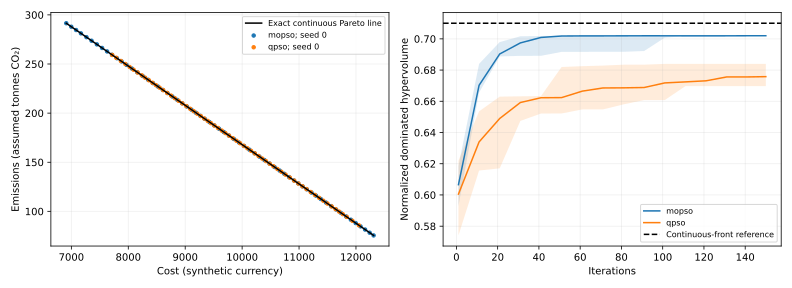

Multiobjective optimization
Cost–emissions tradeoffs with an exact reference
Compared MOPSO and classical QPSO against exact references for constrained unit commitment.
Median normalized hypervolume: 0.7020 MOPSO; 0.6758 QPSO.
Motivation
Can population-based methods recover cost–emissions tradeoffs while preserving feasible generation schedules?
Implementation
Two generators meet four hourly demands with explicit commitment, startup and output constraints. Both methods use 4,530 candidates per run and five fixed seeds. An analytic Pareto line and seventeen independent HiGHS MILPs provide references.
Results
Median normalized dominated hypervolume is 0.7020 for MOPSO and 0.6758 for QPSO, against 0.71 for the continuous reference front. Every retained schedule passes the independent feasibility audit.
Limitations
The synthetic model excludes ramping, minimum up/down times, reserves and network constraints. Hypervolume depends on the declared normalization and reference point. QPSO executes classically; this small study does not establish universal optimizer rankings.
